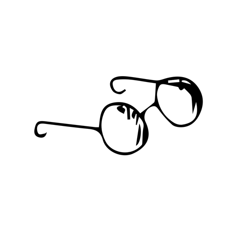

Old friends Old friends Sat on their park bench Like bookends A newspaper blown through the grass Falls on the round toes On the high shoes Of the old friends Next
The sounds of the city Sifting through trees Settle like dust On the shoulders Of the old friends Next
Can you imagine us Years from today Sharing a park bench quietly? How terribly strange To be seventy Next
Long ago . . . It must be . . . I have a photograph Preserve your memories They’re all that’s left you  Restart